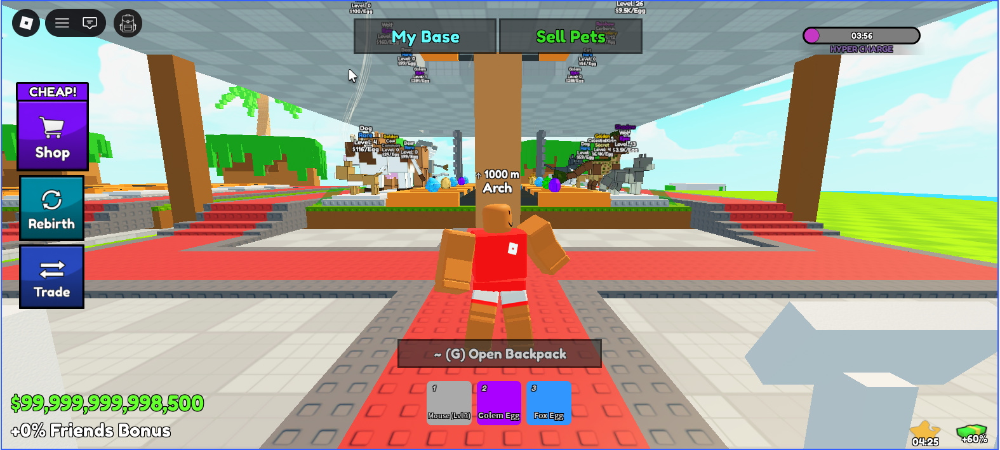
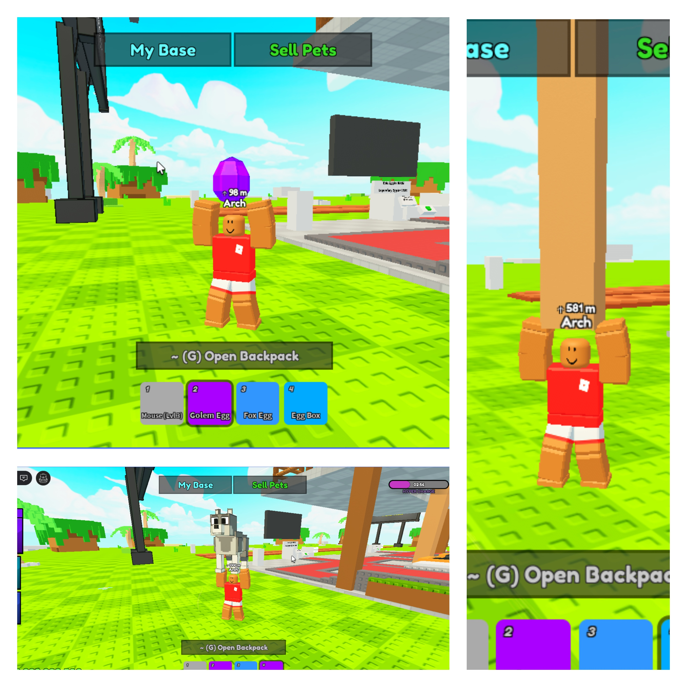
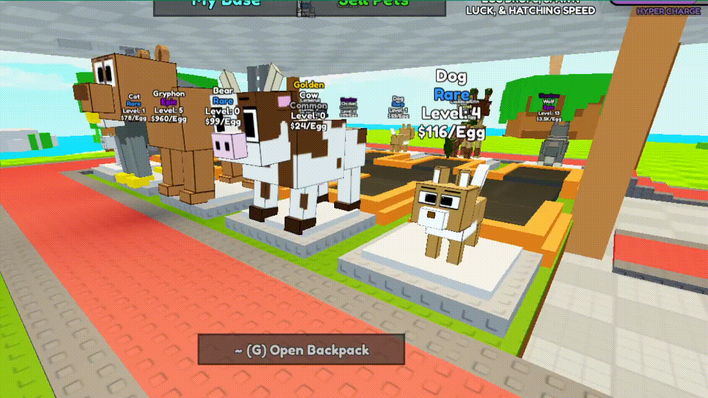

Hyper Pet RNG Farm
Roblox Game
Hyper Pet RNG Farm is a Roblox game that I've developed. The main gameloop is [player buys egg -> player hatches egg into pet -> pet starts producing currency -> player gets money -> player buys more eggs]. This page describes some of the basic main aspects of the game, but there is a lot more going on behind the scenes, and a lot more to come as it is still a work in progress!

This is what players see when they join. The system saves player pets, money, and inventory, and players pets keep producing eggs while they are offline, so that when they log back in they get compensated for their offline time.

All items selected in the inventory (right now, the only items are eggs, pets, and egg boxes) are held in an overhead animation above the character's head.

Pets produce eggs, which are sold for cash when the player sells the collection box! Everything you see, from pet and models to animations, physics, and effects were designed and developed by me for this game.

This is the current version of the UI elements in the game. The inventory has filtering options, and items can be freely dragged around inside the backpack and hotbar. There are built in keybinds to open the backpack, and there are vibrations when you click on buttons on mobile devices.

The pets on the conveyor look like this after they've been hatched. I've written a script that goes onto each pet model that loops their animation indefinitely.

My process for creating models tends to be Blockbench (create the mesh & textures) -> Blender (rig & animate) -> RBLX Studio. One of the main things that I focus on to bring a model to life is realistic, fluid movement, in ways that aren't robotic.

I've also implemented admin commands for myself to use to start events - which events are normally on a 20 minute countdown and run for 5 minutes, but I can switch the mode over to manual to start an "Admin Event" in which I can start events for however long whenever I please. The purpose of events is so that players can collect eggs with "mutations" or "multipliers", which make the eggs more valuable by making the pets that they hatch produce higher currency.

As you can see in the admin commands block, there are notifications that appear on the player's screen for certain triggers. Other triggers for notifications are trying to interact with something without having the required item selected, events starting/ending, & global admin messages.